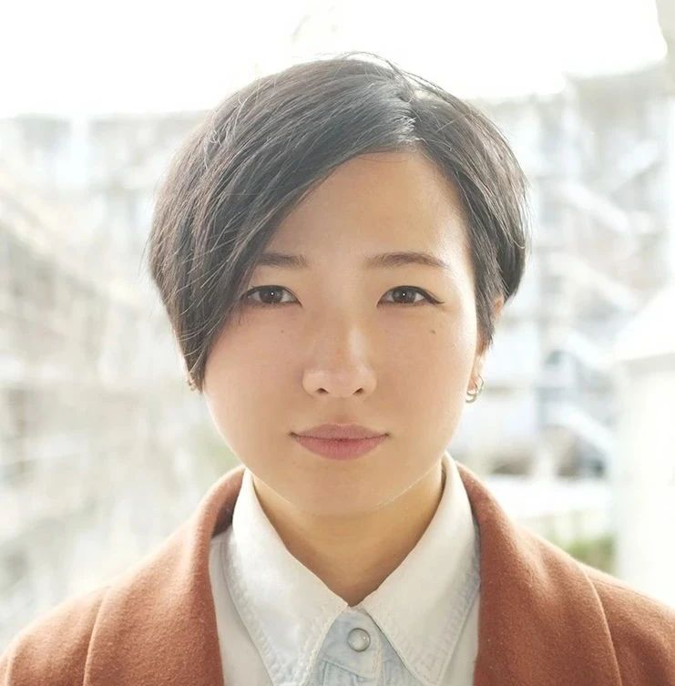
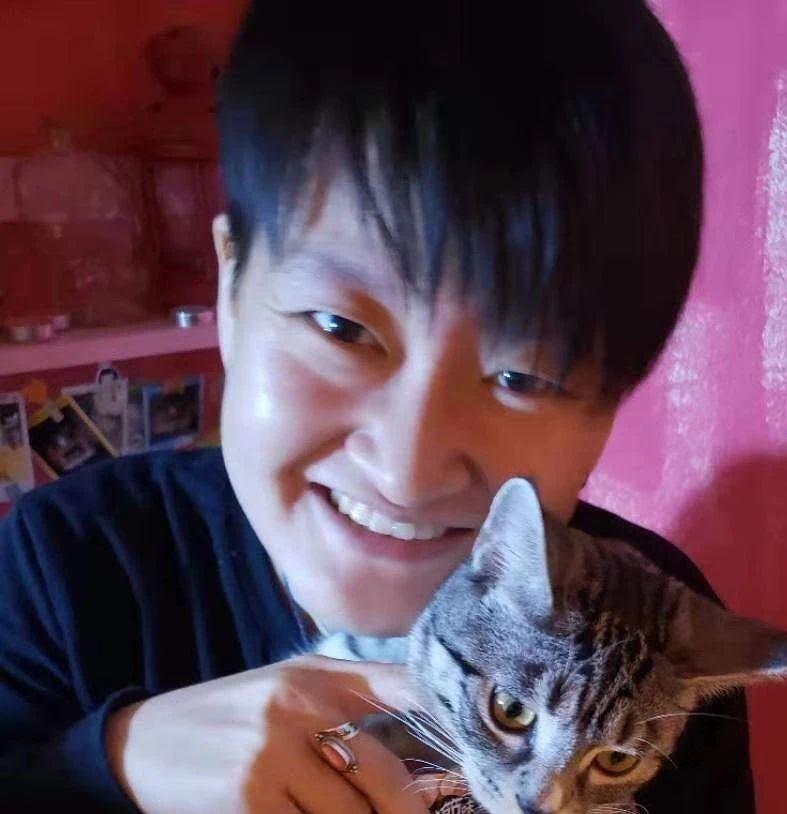
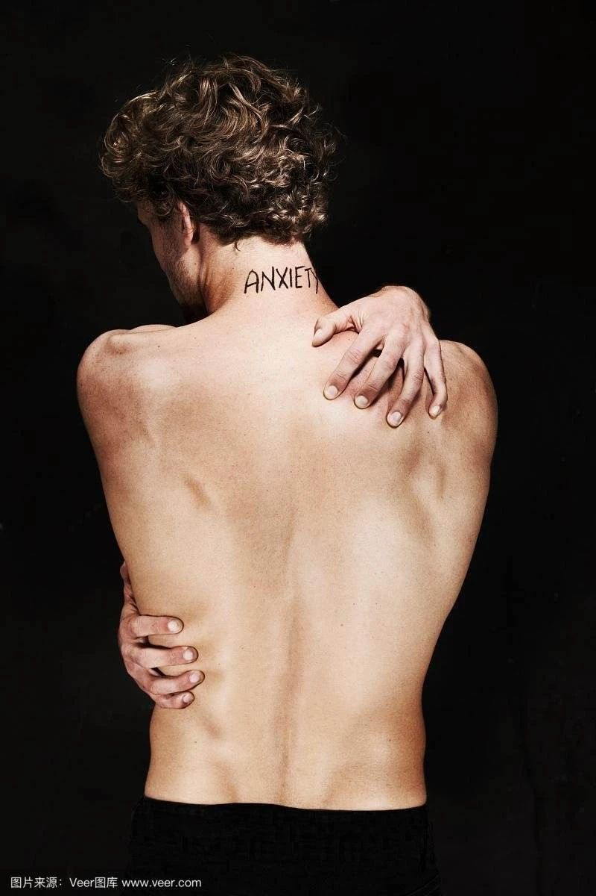

517电台 | 面对“身体焦虑”，我们将彷徨向何处
以下文章来源于北同文化 ，作者尊重多元合作
北京同志中心官方微信。北京同志中心成立于2008年2月14日，作为一家民间公益组织，通过在北京地区提供社区服务和开展倡导活动来增强中国同志（LGBT）人群的自我认同；推动同志运动，消除歧视，实现平等；并促进多元文化和公民社会的发展。
2020年5月17日，当国际不再恐同恐跨日来临之际，我们做了系列交叉性议题的电台节目，共同探讨每个人是怎样因为自己的标签和身份，在相对狭窄的主流价值观中受到孤立和偏见，我们需要携手一起“打破沉默“，让我们每个因为自己边缘身份而被排斥的个体能够被看见。
“身体和外貌“几乎让每个人都曾感到过不安。当一个跨性别女性在每每哀叹自己身材一点也不“女性化”，乃至为了符合社会规范而不惜手术时，殊不知顺性别女性也会因为被人说“飞机场”而备受折磨。当身高不足一米七的跨性别男生，在别人口中似乎连恋爱相亲的资格都没有的时候，却不知也有许许多多的人苦于身高无法变低而感到焦虑。
什么，难道我一个黄皮靓妹，只是因为脸盘方正，棱角分明就失去了被传单小伙塞传单叫美女的机会了吗？


我小腿比较粗壮，腿上都是肌肉，都不敢穿短裙，好怕被人背后偷偷叫「坦克」。


我是女孩子，我的骨架好大，关节好粗，声音低沉打电话永远都被叫「先生」，是不是永远都没法改变了。

……
也许以上的独白会引起你的不适，但这些都是「我」的故事，「我」朋友的故事，「我」朋友的朋友的故事。无论你是否是性与性别少数，这些故事都曾或多或少出现在我们的生活中。
嘉 宾 介 绍
第一期节目，我们邀请到了四位嘉宾做客电台，共同探讨“身体焦虑＊LGBTQ+“这个议题。
我们的嘉宾有：


Sachi：
性别酷儿，北京同志中心跨性别项目主管
自我体态接受运动（Body Positivity Movement）在维多利亚后期就已经开始，而当时的中产阶级妇女们为了迎合沙漏型身材的审美，几乎都会穿反人类的紧身胸衣。进入20世纪后，这一对身体有着严重摧残的服饰文化终于随着服装材料的更新，在解放女性的浪潮中消亡了。但进入21世纪后，它再度套上“塑身衣“的名字卷土重来，从电视广告，到主播带货，当年的焦虑，而今依旧阴魂不散。
放眼中国，古时也有裹小脚和束胸（宋时流行平胸）的传统。大多数人永远逃不过一个时代的“主流”审美。一波又一波的自我体态接受活动兴起又退去，但是身体焦虑这个幽灵，从未离开我们，它随着信息大爆炸时代一起爆炸，让躲避变得再无可能。生活在这个社会中，没有一个人逃得过凝视，无论你是顺性别还是跨性别，能做到避免身体焦虑，悦纳自己不“完美”的身体的，又能有几个呢？

（图片来源于网络）
我们在这里真诚地邀请大家留言，写下你们个各自关于“身体焦虑“的故事，一起将”心魔“曝露在阳光下。或许，彼此的分享可以让我们把这些焦虑加点盐，再晒干，最后下酒吃掉。欢迎所有的朋友，只要你有和”身体及外貌“相关的小故事，都欢迎你分享在下面留言栏里！！